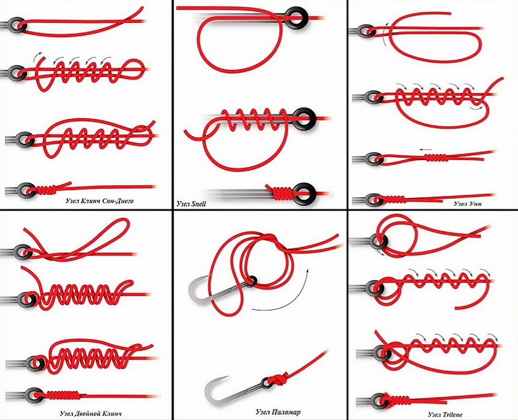

Как завязать рыболовный узел
Если говорить проще, то связывание рыболовных узлов обычно представляет собой использование веревки, лески для образования петель с последующим прохождением конца веревки сквозь петли. Узлы специфичны. Каждая из технологий завязывания узлов применяется к конкретной ситуации в рыбалке, а также зависит от типа лески и вида крючка. Рассмотрим, как связать рыболовные узлы для начинающих.
Узел Паломар
Паломарский узел считается одним из мощных и сильных рыболовных узлов, которые применяют для крепления крючка к леске. Технология применяется для ловли крупной или тяжеловесной рыбы. Этот узел легко формируется и может применяться для лески разного типа, но лучше всего будет в сочетании с плетеной леской.
- Технология узла паломар:
- Возьмите леску с захватом от 5 до 15 см и проденьте через ушко крючка.
- Крючок должен свисать, а сверху образоваться узел, который включает в себя формирование петли и прохождение одного конца лески через петлю в двойной линии, которую вы только что сформировали.
- Для прохождения крючка должно остаться свободное пространство в узле, а леска не должна быть перекручена.
- Протяните конец петли вниз и пропустите его через весь крючок или приманку.
- Прежде чем затянуть узел, смочите леску, и потяните за противоположные концы.
- Отрежьте излишки лески, если это необходимо.
Хирургический узел
Одним из практичных и полезных рыболовных узлов является узел хирурга, который образовывает воедино две лески равного диаметра. По сравнению с прочими технологиями, хирургический узел увеличивает прочность крепления приманки. Он применяется для вылова крупной рыбы и гарантии того, что леска не оторвется от крючка.
- Технология хирургического рыболовного узла:
- Подогните ведущую леску, образуя вспомогательную параллельно с перекрытием на 15 см.
- Свяжите две лески вместе в свободный узел и протяните направляющую леску через петлю.
- Не закрывая петлю, сделайте еще один узел, снова проведя петлю в узел через отверстие.
- Смочите леску и затяните образовавшийся узел.
Уни-узел (Узел Палача)
Рыболовный уни-узел или узел палача считается самой универсальной техникой в рыбалке. Одинарный узел является одним из самых сильных и отлично подходит для вылова тяжелой рыбы. Уни-узел наиболее эффективен в сочетании с моноволокновой леской и терминальной оснасткой. Также этот рыболовный узел можно использовать и в сочетании с другой оснасткой.
- Технология рыболовного уни-узла или узла палача:
- Проденьте около 15 см лески в ушко крючка.
- Удвойте леску, создав петлю.
- Оберните конец лески вокруг петли пять или шесть раз.
- Протяните конец лески через разомкнутую петлю.
- Намочите и потяните, чтобы сформировался узел.
- Затяните основную леску, чтобы сдвинуть узел к ушку крючка.
Улучшенный узел Клинча
Для приманок серьезные рыбаки рекомендуют использовать узел клинча или улучшенного узла. Рыболовный узел клинча улучшенный – это технология, применяемая начинающими рыбаками для закрепа на крючке искусственных приманок, мух или блесен. Узел по праву считается крепким и выносливым, используется для ловли средних и крупных рыб.
- Улучшенный узел Клинча
- Проденьте 15 см лески в ушко крючка.
- Откиньте назад и оберните конец вокруг основной лески пять раз, оставляя небольшое пространство между крючком и приманкой.
- Оставшуюся леску пропустите в образовавшееся отверстие между ушком крючка и приманки.
- Возьмите тот же самый конец лески и проденьте его в большую петлю, которую только что образовали.
- Медленно потяните за ведущую леску и конец бирки от крючка, следя за тем, что образовавшиеся обмотки не перекрывают друг друга.
- Увлажните леску и затяните узел туже.
- Потяните леску стоя, пока узел не будет закреплен на верхней часьи приманки или крючка.
Узел Снелл
Рыболовный узел Снелл используется, чтобы усилить леску и повысить коэффициент вылова рыбы. Технология Снеллинга заключается в создании узла чуть поодаль проушины крючка. Это дает большую фиксацию между леской и наживкой.
Это универсальный рыболовный узел для рыбалки на крупную добычу. Однако, стоит помнить, что для узла Снелла необходима хорошая леска с высокой устойчивостью, разрывом нагрузки.
- Технология узла Снелл:
- Держите крючок кверху и дважды проденьте конец лески через ушко, образуя петлю, которая идет вдоль задней части крючка и имеет параллельный хвостику крючка загиб.
- Оберните лишнюю леску, создающую петлю, вокруг хвостика крючка пять или десять раз в зависимости от размера хвостика крючка.
- В последнем цикле обмотки проденьте конец лески через петлевую лидирующую леску так, чтобы этот конец смотрел на крючковую зазубрину.
- Потяните образовавшиеся концы противоположно друг другу.
- Сдвиньте узел наверх, чтобы он встал на один уровень с ушком крючка.
- Воспользуйтесь плоскогубцами, чтобы вытащить конец лески и полностью затяните узел, после чего обрежьте излишки.